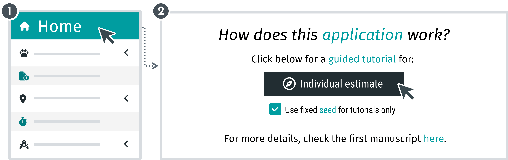

Why movedesign?
movedesign is built using R language with Shiny for an easy-to-use user interface (GUI). This application will allow you to test different tracking schedules while considering an initially set research question (currently home range and speed/distance estimation).
- Doesn’t require R coding experience.
- Leverages the
ctmmR package for statistically unbiased methods.
How to start:
The application includes a built-in guided tutorial to help you navigate its features. When you open the 'Home' tab, you’ll find the following:

This step-by-step guide will walk you through the app, ensuring you understand its features and functionality. When an action is required, it will be clearly highlighted. Please follow these instructions carefully, as each step builds on the previous one. If no action is needed, simply continue to the next step by clicking 'Next' or pressing the right arrow key on your keyboard. The information from the guided tour is also partially available below.
Warning: During the guided tutorial, refrain from interacting with anything outside the highlighted zones to avoid interruptions.
This tutorial provides an overview of key features but does not cover detailed definitions. For more in-depth explanations, you can access comprehensive help tips at any time. Documentation is also available on Silva et al. (2023).
Workflows
These are the current options for movedesign workflows. Users may configure their study design by selecting different options for data source, research target, and analytical target. All workflows follow a stepwise approach, with tabs displayed sequentially on the right sidebar. Irrelevant tabs for the current workflow will be automatically hidden.
Step 1. Data source:
Users can specify what is their data source:
Step 2. Research target:
Users can define their research targets:
Step 3. Analytical target:
Users can decide on their analytical target for the estimates:
Additionally, users have the option to:
Go here for more detailed information regarding the Individual estimate workflow.